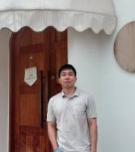

Napat Ngoensombat

Summary
Currently working as a software QA for a wholesale company's selling platforms in Thailand.
Nowadays working with both front-end and back-end parts. My current day-to-day task is to test
changes or new feature being developed in my responsible area. Very fast learner, with a good attitude
and willing to learn a new technology or tools needed. Have a basic knowledge in coding,
testing financial invoices and had an experience on automation test.
Education
- Bachelor
- Economics, Kasetsart University
- GPA: 3.25
- High school
- Thawaranukul School, Samut Songkhram
- GPA: 3.36
Work Experience
-
Software QA (Manual), Doppio tech
Responsibility: front-end & back-end testing, financial invoice testing
Date: 2021 - Today
Skills
Hard Skills
- Using testing techniques e.g. equivalent partition, cause-effect diagram and state diagram to cooperate in testing
- Working with SQL queries and APIs
- Writing automation script using Robot framework
Soft Skills
- Good attitudes - Take the responsible task seriously. Willing to learn and help other colleages when appropriates
- Communications - Take times to create a neat and easy to understand report. Always keep all stakeholders informed.
- Critical thinking - Has reason when it comes to work. Always take time to process the current information to plan a better move.
Contact me